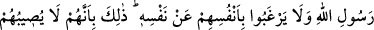

Balçık gibi gevşek ve salık olma
Eteğine yapıştın mı, teslim ol
Hz. Musa gibi Hızır’ın emrine gir
Önde ve rehber olan şeyhi
İmtihan etmeye kalkışan mürid eşektir
Allah Teâlâ’dan bizi itikad kaymasından muhafaza etmesini, Hak erlerinin yolunda
dâim ve sâbit kılmasını niyâz ederiz.
120. Medine halkına ve onların çevresinde bulunan bedevî Araplar’a Allah’ın
Rasûlü’nden geri kalmaları ve onun canından önce kendi canlarını düşünmeleri
yakışmaz. İşte onların Allah yolunda bir susuzluğa, bir yorgunluğa ve bir açlığa
dûçar olmaları, kâfirleri öfkelendirecek bir yere ayak basmaları ve düşmana karşı
bir başarı kazanmaları, ancak bunların karşılığında kendilerine sâlih bir amel
yazılması içindir. Çünkü Allah güzel davrananların mükâfâtını zâyi etmez.
“Medine halkına…”
Arapça’da mutlak olarak “yıldız” denildiğinde Süreyya yıldızı anlaşılması gibi
“Medine” kelimesi de hicret yurdunun özel ismidir. Eğer Medine kelimesi ile başka bir
şehir kastedilmek istenirse o zaman kayıt getirilir. Hicret yurdu olan Medine şehrine
nisbet yapılmak istendiğinde “Medenî” denilir. Diğer şehirlere nisbet yapıldığında ise
ondan ayırdetmek için “Medînî” denilir. İnsânü’l-uyûn adlı eserde böyle geçmektedir.
İmam Nevevî der ki: Beldeler arasında Medine ve Mekke’den daha çok isme sahip
olan başka bir belde bilinmemektedir. Bazı âlimler Medine şehrinin yüz kadar isminin
olduğunu söylemişlerdir. Bazıları şunlardır: Dâru’l-ahyâr (Hayırlılar yurdu), Dâru’l-
ebrâr (İyiler yurdu), Dâru’s-sünne (Sünnet yurdu), Dâru’s-selâme (Selamet yurdu),
Dâru’l-feth (Fetih yurdu), el-Bârre (İyi belde), et-Tâbe ve et-Tayyibe. Son iki ismin
verilmesi bu şehirde yaşamak güzel olduğu için, başka şehirde bulunmayan güzel bir
kokunun onda bulunması sebebiyledir. Toprağı, cüzzam ve alaca hastalıklarına, hatta
bütün hastalıklara şifadır. Acve’si (iyi cins bir hurma) zehirlenmeye şifâdır. Allah
Teâlâ, Mekke ve Medine şehirlerine özel bir imtiyaz tanımıştır; vârislerin en hayırlısı